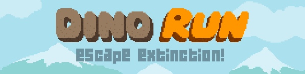
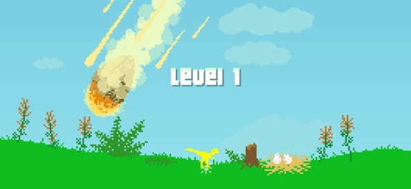

Dino Run impressions
2011-03-25 14:16:22
status: inherit
author: Bryan
Just wanted to quickly mention one of my favorite recent indie webgames - Pixeljam's Dino Run.

The concept of Dino Run is extremely simple - control a dinosaur running for its life from the effects of a nearby asteroid impact.
The presentation is intentionally outdated as a stylistic decision: pre-8-bit era styled pixel graphics and ambient sound effects, with a few flourishes. Overall a very nice retro/minimalist aesthetic of prehistoric fauna and increasingly desolate environments; forests, waterfalls, tar pits, caves, volcanoes, etc. Some of the level art has a nice depth to it despite the color and resolution simplicity, and crashing meteorites are suitably dramatic.
Gameplay is mostly minimal as well with some nice touches if the player wants to delve deeper - in RPG-esque features, items, speedruns, multiplayer, boulder rides/doomsurfing(!) and so on.

The game understands and does a few things particularly well, in my opinion, gameplay-related, atmospherically, and thematically.
FLIGHT (DEFINITELY): Running for your life is a classic gameplay technique when supplemented with the appropriate atmosphere. That is, with the proper treatment, something as straightforward as a set time limit to gameplay becomes something frantic. This kind of gameplay, when done well, can invoke some of the most primal of instincts, fight or flight. Narrowly escaping when it seemed the wave of destruction would overtake you can trigger euphoria, despite the simplicity of the presentation. In my opinion, Dino Run joins the ranks of other lofty examples of this idea done well - Metroid, Half Life 2, Mirror's Edge... among others. Finally, the fact that your little dino manages to indulge his insatiable appetite while running from certain death adds an amusingly morbid dimension to the experience.

LEVEL DESIGN: Game design which does not allow the player to do or see everything in a typical playthrough invariably adds to the believability, specifically verisimilitude, of the game world (see 20 Mysterious Games on Gamasutra). This is only a good thing if the game is already well designed at its core. For games with a strong atmosphere, not being able to see the limitations and boundaries of the game world and the fiction of the experience in striking clarity only adds to the immersion a player can feel. Dino Run is not perhaps the best example of this quality but the combination of the simple gameplay and multi-path level design (including some hidden paths) work well together to encourage the player to wonder "what if I had gone the other way?" Games which allow the player to see the ends of all roads, metaphorically speaking, and all possibilities lose some of that quality of immersion.

EXTINCTION?: Finally, as an extension of the first point, there's something compelling about playing a game in which the goal is to survive, but not only for the sake of surviving - rather that of staving off extinction. The game intentionally uses those particular terms - extinct and doomed - and the finality those words evoke tended make me consider humanity's existential crisis and the ultimate (perhaps?) destination point of all things, oblivion. The player's actions in the game seem to not only represent the struggle of a single creature to survive, but also symbolizing all life's universal fight to outpace extinction. The presence of your fellow dinosaurs and mammals running through the stage heightens this feeling. Although the player actually can succeed in guiding his dinosaur to safety - ostensibly at least - the feeling of grim inevitability runs consistently throughout the experience. Pretty deep for a little browser game, huh?

Some things I would have had on my wish list if I was on the dev team:
- higher danger from other creatures (being trampled, eaten, etc.)
- a better feeling of acceleration and momentum
- being able to select or unlock different species of dinosaurs (and mammals?) with different starting stats and access to certain areas of the map - i.e. higher starting strength vs. lower starting speed, small tunnels, etc.
Comments: